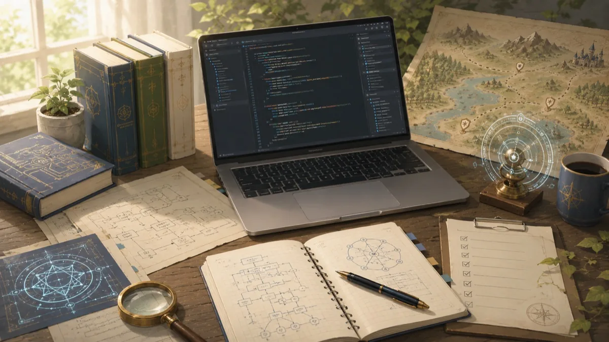

ITパスポートの独学計画：3分野の出題目安・合格基準と学習の見直し方

「2ヶ月で受かるか」より先に、いま説明できる分野と、これから使える時間を確認しましょう。私は現在、ITパスポートと基本情報技術者を学習中です。この記事は合格体験談ではなく、公式の試験条件と、独学計画を調整するための編集部の確認手順を分けたガイドです。
年末の休止と2027年度の予定を分けて確認する
IP・SG・FEは2026年12月28日以降、一時休止の予定です。会場により休止が早まることがあり、確認した公式案内では再開日は未公表です。「随時実施」でも休止中は受験できません。予約前に最新の休止・再開案内と会場の空きを確認してください。
出典：IPA「2026年5月以降の試験実施」変更後の表、2026年度FE・SG試験案内（2026年11月1日確認）。
2027年度の新制度案では、IP・SG・FEは春頃からCBT方式で通年実施する予定です。これは休止からの再開日が確定したという意味ではありません。「2027年」と「2027年度」を分け、具体的な開始日・申込日・最終的な出題範囲は今後の発表で確認します。
ITパスポートの出題分野は、現行の「ストラテジ・マネジメント・テクノロジ」から「ビジネス」「テクノロジ」「セキュリティ・倫理」の3分野へ再整理する案です。以下の現行制度の表を、そのまま2027年度の確定条件として使わないでください。新制度のシラバスは現在「案」として公開されています。
出典：IPA「試験制度見直しの検討状況」、新制度のシラバス案（2026年11月1日確認）。
まず公式の試験条件を確認する
ITパスポートはITの共通的な基礎知識を問う国家試験です。休止期間を除きCBT方式で随時実施され、試験時間は120分、四肢択一の100問です。会場のパソコンで解答する方式で、随時実施は「どの日時でも予約できる」という意味ではありません。
出典：IPA「ITパスポート試験」、IPA「IP・SG・FEパンフレット」（2026年10月2日確認）。申込み・会場・手数料はiパス公式サイトで最新の案内を確認してください。
| 評価 | 基準点 |
|---|---|
| 総合評価点 | 600点以上／満点1,000点 |
| 分野別評価点 | ストラテジ・マネジメント・テクノロジのそれぞれ300点以上／各満点1,000点 |
採点はIRT（項目応答理論）に基づきます。正答数を単純に10倍した値が評価点になるわけではありません。学習用の正答数は苦手分野を探す記録には使えますが、本試験の評価点や合否をそのまま予測する数値として扱わないでください。
出典：IPA「試験要綱Ver.5.6」紙面15・17（2026年10月から適用、2026年10月2日確認）。
3分野の出題目安と、優先度の決め方
| 分野 | 出題目安 | 学ぶ対象の例 |
|---|---|---|
| ストラテジ系 | 35問程度 | 企業活動、経営戦略、法務など |
| マネジメント系 | 20問程度 | 開発、プロジェクト、サービスの管理など |
| テクノロジ系 | 45問程度 | コンピュータ、ネットワーク、情報セキュリティなど |
出典：IPAパンフレットのITパスポート欄、ITパスポートシラバスVer.6.5（2026年10月2日確認）。
出題数の目安と、評価に使われる問題数も区別します。要綱では100問のうち総合評価は92問、残り8問は今後の出題の評価に使用し、分野別評価はストラテジ32問・マネジメント18問・テクノロジ42問としています。この区別からも、「35問のうち何問正解すれば分野基準を超える」と単純に逆算できません。
出典：IPA「試験要綱Ver.5.6」紙面12注1（2026年10月2日確認）。
必要な勉強時間を、使える時間と混同しない
「必要時間」は合格に十分な学習量の話、「利用可能な時間」は生活の中で確保できる時間の話です。このページでは、経験別の標準的な必要時間を裏づけられていないので、100〜200時間などの数値を合格目安として掲載しません。
例えば、仮に平日5日だけ各30分を使えるなら、1週間の学習枠は150分です。これは自作の計画計算で、150分の学習で何ができるか、何週間で合格するかを保証する数値ではありません。授業・仕事・復習の負担を含めて、自分の予定へ置き換えてください。
- 最初に三つの分野へ触れる。手元の教材の章見出しとシラバスを照らし、知っている語にも「説明できる／選択肢で迷う／初めて」の印を付けます。
- 一つの学習枠で、読む→解く→理由を残す。解説を読んで終わらず、どの語や条件を取り違えたかを書きます。問題数より、止まった箇所が後から分かる記録を優先します。
- 週末に計画を縮めるか決める。予定に収まらないなら、新しい範囲を増やす前に復習へ切り替えます。終えられなかった分を翌週へ全部上乗せしないでください。
間違えた問題は、三つの理由に分ける
| 止まった理由 | 書き残すこと | 次の行動 |
|---|---|---|
| 用語の意味が不明 | 誰が・何を・何のために使う語か | 教材の該当見出しへ戻る |
| 似た語の区別が不明 | 違いが出る場面を一つ | 同じ場面で二つの語を比べる |
| 手順・条件を見落とした | 使った条件と抜けた条件 | 途中の状態や計算を行ごとに残す |
「間違えたから暗記を増やす」だけでは、違う原因が混ざります。用語を知らなかった場合と、知っている用語を場面に当てはめられなかった場合では、戻る場所が違います。身近な例は区別の補助に使い、正式な定義や問題の前提を例え話で置き換えないようにします。
教材を選ぶときは、対応するシラバス、用語の説明、問題と解説の往復のしやすさを確認してください。このガイドでは未確認の利用体験や教材間の優劣を推薦理由にしません。合格率も年度・受験者数・合格者数を伴う公式統計で確認すべき情報なので、単独の「約50%」から自分の合格可能性を判断しないでください。
記入例：受験日が未定でも、今週の学習は決められる
次は編集部が作成した仮の記入例です。実在する受験者の学習実績や合格体験ではありません。予約できない時期は、希望時期と実際の予約日を別の欄にしておくと、日程と理解度を混同せずに見直せます。
| 欄 | 仮の記入内容 | 見直すきっかけ |
|---|---|---|
| 希望時期／予約日 | 2027年度を希望／予約日は未定 | 休止・再開と新制度の申込案内が出たら確認 |
| 教材の対応範囲 | 現行3分野の教材を使用。新シラバス案との照合は未実施 | 案と確定版の区別、教材の対応版を確認 |
| 今週使える時間 | 平日5日×30分＝150分という仮定 | 復習が予定に収まるか週末に確認 |
| 説明で止まった語 | 認証と認可を区別できなかった | 「本人の確認」と「操作の許可」の違いを例で説明し直す |
| 次の一手 | 同じサービスのログインと閲覧権限を比較してメモ | 別の日に解説を見ずに区別できるか確認 |
自分用の記録では、教材名・ページ、確認した公式URL、確認日も残してください。記入例の時間を目標に合わせる必要はなく、手元の演習で止まった理由を次の行動に結び付けるための欄として使います。
受験日を決める前の確認
- 復習した用語の違いを、解説なしで説明できるか。
- 三つの分野のいずれかを、問題数が少ないという理由で省いていないか。
- 公式の申込み条件・会場の空き・当日の案内を確認したか。
正解を見た直後だけ解ける状態なら、別の日に解き直す時間を残します。復習が必要なら、受験時期または新しい範囲を進める量を調整します。これは編集部の計画案で、模擬問題の結果から本試験の合格を保証するものではありません。
よくある質問
2027年はITパスポートを受けられなくなるのですか？
2026年12月28日以降は一時休止の予定で、確認した案内では再開日が未公表です。一方、2027年度の新制度案では春頃からCBT・通年実施を予定しています。具体的な再開・申込日や確定条件はIPAの最新案内を確認してください。
ITパスポートは何時間で合格できますか？
このガイドでは全員共通の必要時間を示しません。利用可能な時間と、三つの分野の理解・解き直しの結果を分けて記録し、計画を調整してください。
総合評価点だけ高ければ合格ですか？
いいえ。総合600点以上に加え、三つの分野それぞれ300点以上が必要です（総合・各分野の満点はそれぞれ1,000点）。本文のIPA試験要綱に基づきます。
次に読む記事
第1〜18章 総復習模擬問題36問を解く。各問の解説から、該当する復習記事へ移動できます。
第1〜8章の補足図解と自作例題
教科書や模試を読んで引っ掛かった論点を、追加した解説から復習できます。
変更履歴：2026年11月1日、休止予定と2027年度の制度案を分け、自作の計画記入例を追加。2026年10月2日、現在の学習状況と公式試験条件へ整理。根拠のない合格期間・時間・得点保証、古い戦略図の掲載と未確認の推薦体験を終了しました。